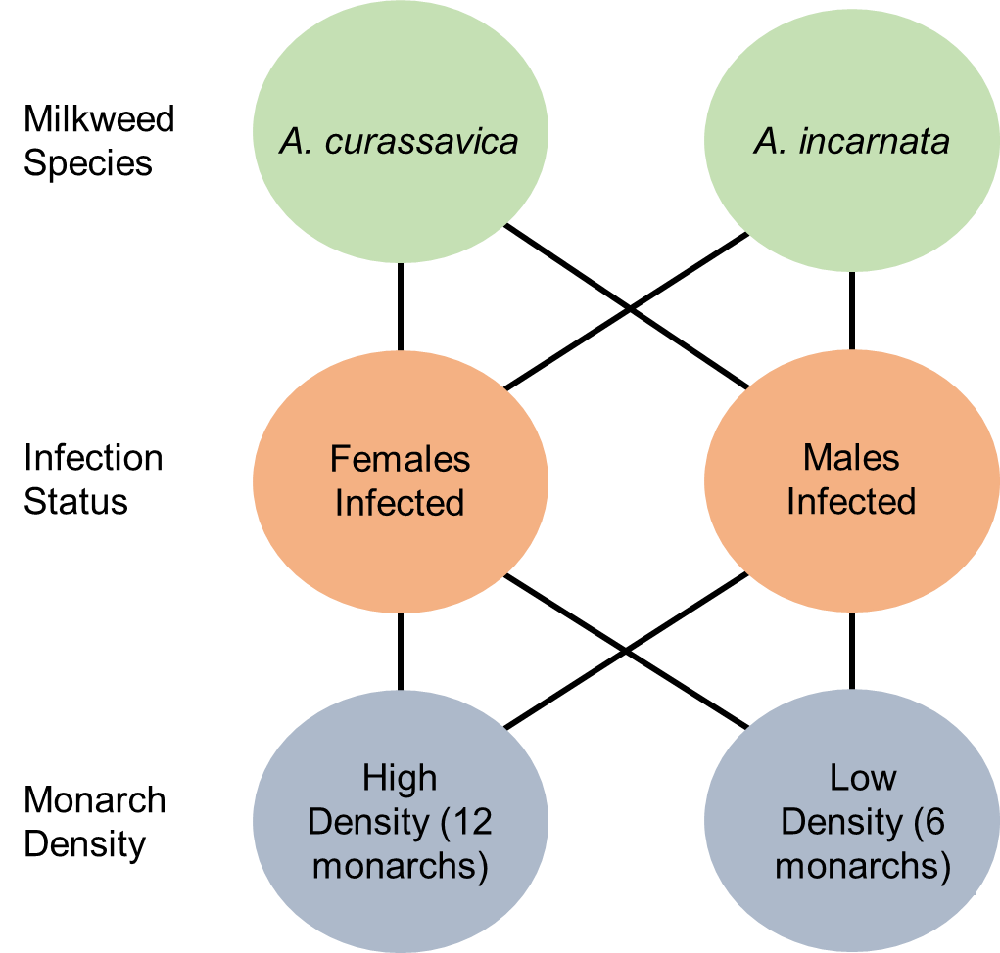

Monarch Butterfly Infection Transmission
Abbreviated methods
Experimental design
We set up nine 10x10 ft screened canopy tents in a mowed field near the botany greenhouses at the University of Georgia. Each tent received 16 greenhouse grown milkweed plants of either the native (A. incarnata) or non-native (A. curassavica) variety. Of the experimental tents, four received A. incarnata and four received A. curassavica. Owing to space and plant limitations, the single control cage received A. curassavica only. Plants within each tent were given a unique number ID from 1-16 representing a specific position within the tent. This numbering system was consistent across all tents so that the same plant number always occupied the same position in each tent. At the center of each tent, we placed a wire stand to hold sponges with honey water for monarch feeding. We randomly assigned tent positions within the field, with all tents approximately 2m apart.
{kind=link}
Figure 1: The experimental scheme consisted of a fully crossed design where experimental tents contained either Asclepias curassiva or Asclepias incarnata plants, infected females (with healthy males) or infected males (with healthy females), and either a high (12) or a low (6) density of monarchs. Due to space limitations there was a single control cage with A. curassavica and healthy adult monarchs at a high density.
Monarchs were randomly assigned to a cage and each monarch was given a unique color ID to observe behavior. Colored tabs were attached prior to release into cages, and each cage differed in the variables in figure 1. Male and female monarchs were equal in each cage.
{kind=link}
Figure 2: Experimental cages used during the experiment.
Behavioral data collection
We conducted observations between 1100 and 1700 hrs. Each observation interval lasted for a maximum of 15 mins and ended early if no activity occurred for 5 minutes. We recorded weather condition data at the start of each interval, including temperature, cloud cover, precipitation, and shade created by the tent cover. During the behavioral observations, we recorded individual monarch-plant interactions, including the type of activity (landing, nectaring, or oviposition), the duration of interaction, and the contact height on the plant.

Figure 3: Monarch with number and tab on wings. Monarchs were observed from outside the cage and identified on the wing.
Spore deposition and bioassay
On days 2, 4, 7, and 9 of the experiment, we collected six leaves from four randomly selected plants in each cage. Leaves were chosen randomly from the top third of the plant and were placed into individual, pre-labeled bags. In the lab, we collected tape samples from four of the leaves and used the remaining leaves for the bioassay described below. Tape samples were collected by pressing clear packing tape firmly against the leaves and tracing the leaf outline so that we could obtain an estimate of leaf area. For each plant, we collected tape samples from the top side of two leaves and the underside of the other two. To estimate spore deposition on the leaves, tape samples were evaluated under a microscope and spores were counted across the entire leaf unless the observer reached 300 spores before scoring the entire leaf. Once 300 spores were counted a final estimate was obtained by extrapolating across the remaining leaf area.
For bioassay samples, we prepared petri dishes with damp filter paper and either a half or a whole experimental milkweed leaf so that each caterpillar received a roughly equivalent amount. The bioassay was conducted using late second instar caterpillars from a single lineage previously fed on A. incarnata. Caterpillars were given 24 hours to consume their leaf at which point we recorded the relative proportion of the leaf consumed and transferred each caterpillar into an individual pint container with clean greenhouse grown A. incarnata. Upon eclosion, monarchs with a pupal score of 2 or less were taped to confirm their infection status. We recorded the forewing length and mass of each monarch one day post eclosion unless the parasite resulted in extreme deformity, in which case they were immediately euthanized post eclosion.
We evaluated the spore load of infected monarchs from both the behavioral and bioassay components of the experiment that had either a positive pupal score or a tape score of 5. We first removed the wings and placed the monarch body in a vial with 5mL of water. Each vial was shaken for 5 minutes using a Vortex Genie 2 to dislodge the spores. After vortexing, the body was removed and the vial was vortexed for an additional 20 seconds to ensure spores were suspended in solution before pipetting the mixture into a hemocytometer slide. We counted spores in four cells within each well and obtained an average across 5 wells (only two wells were counted if each cell had more than 20 spores). This average spore count represented the number of spores in 1 ml of water. To obtain an estimate for the entire 5 ml, we multiplied this number by 50,000 and used the log transformed value in data analysis.
{kind=link}
Figure 4: An example of a monarch heavily infected with Oe. Abdomen and wings are both wet and will not dry.
Data analysis
Results
References
Akaike, H. 1998. Information Theory and an Extension of the Maximum Likelihood Principle, pp. 199–213. In Parzen, E., Tanabe, K., Kitagawa, G. (eds.), Selected Papers of Hirotugu Akaike, Springer Series in Statistics. Springer New York, New York, NY.
Brooks, M. E., K. Kristensen, K. J. van Benthem, A. Magnusson, C. W. Berg, A. Nielsen, H. J. Skaug, M. Maechler and B. M. Bolker. 2017. glmmTMB Balances Speed and Flexibility Among Packages for Zero-inflated Generalized Linear Mixed Modeling. The R Journal, 9(2), 378-400.
Burnham, K. P., and D. R. Anderson. 2004. Multimodel Inference: Understanding AIC and BIC in Model Selection. Sociological Methods & Research. 33: 261–304.
Clarke, D., and D. Robert. 2018. Predictive modelling of honey bee foraging activity using local weather conditions. Apidologie. 49: 386–396.
Crailsheim, K. 1990. The protein balance of the honey bee worker. Apidologie. 21: 417–429.
European Food Safety Authority (EFSA), Ippolito, A., Aguila, M. D., Aiassa, E., Guajardo, I. M., Neri, F. M., ... & Szentes, C. 2020. Review of the evidence on bee background mortality (Vol. 17, No. 7, p. 1880E).
Hartig, F. 2022. DHARMa: Residual Diagnostics for Hierarchical (Multi-Level/Mixed) Regression Models. R package version 0.4.5.
Hutchinson, M. K., & Holtman, M. C. 2005. Analysis of count data using poisson regression. Research in nursing & health, 28(5), 408-418.
Grueber, C. E., S. Nakagawa, R. J. Laws, and I. G. Jamieson. 2011. Multimodel inference in ecology and evolution: challenges and solutions. Journal of Evolutionary Biology. 24: 699–711.
Lenth, R. V. 2022. emmeans: Estimated Marginal Means, aka Least-Squares Means. R package version 1.7.2. https://CRAN.R-project.org/package=emmeans
Noordyke, E. R., E. v. Santen, J. D. Ellis. 2021. Tracing the Fate of Pollen Substitute Patties in Western Honey Bee (Hymenoptera: Apidae) Colonies. Journal of Economic Entomology. 114:4. 1421–1430.
Reitan, T., and A. Nielsen. 2016. Do Not Divide Count Data with Count Data; A Story from Pollination Ecology with Implications Beyond. PLOS ONE. 11: e0149129.
Richards, S. A. 2005. Testing ecological theory using the information-theoretic approach: examples and cautionary results. 86: 10.
Shan, G., H. Zhang, and T. Jiang. 2020. Correlation Coefficients for a Study with Repeated Measures. Comput Math Methods Med. 2020: 7398324.
Symonds, M. R. E., and A. Moussalli. 2011. A brief guide to model selection, multimodel inference and model averaging in behavioural ecology using Akaike’s information criterion. Behav Ecol Sociobiol. 65: 13–21.
Tredennick, A. T., G. Hooker, S. P. Ellner, and P. B. Adler. 2021. A practical guide to selecting models for exploration, inference, and prediction in ecology. Ecology. 102: e03336.
Wang, X., H. Liu, X. Li, Y. Song, L. Chen, and L. Jin. 2009. Correlations Between Environmental Factors and Wild Bee Behavior on Alfalfa (Medicago sativa) in Northwestern China. Environmental Entomology. 38: 1480–1484.